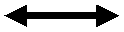
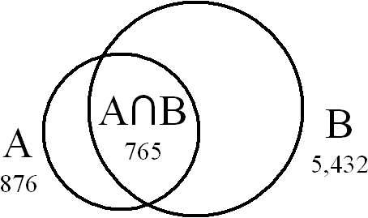

| Version | 5.0 |
| Authors | Mark Davis, Markus Scherer |
| Date | 2009-09-03 |
| This Version | http://www.unicode.org/reports/tr22/tr22-7.html |
| Previous Version | http://www.unicode.org/reports/tr22/tr22-5.html |
| Latest Version | http://www.unicode.org/reports/tr22/ |
| DTDs | http://www.unicode.org/reports/tr22/CharacterMapping.dtd http://www.unicode.org/reports/tr22/CharacterMappingAliases.dtd |
| Revision | 7 |
This document specifies an XML format for the interchange of mapping data for character encodings, and describes some of the issues connected with the use of character conversion. It provides a complete description for such mappings in terms of a defined mapping to and from Unicode, and a description of alias tables for the interchange of mapping table names.
This document has been reviewed by Unicode members and other interested parties, and has been approved for publication by the Unicode Consortium. This is a stable document and may be used as reference material or cited as a normative reference by other specifications.
A Unicode Technical Standard (UTS) is an independent specification. Conformance to the Unicode Standard does not imply conformance to any UTS.
Please submit corrigenda and other comments with the online reporting form [Feedback]. Related information that is useful in understanding this document is found in the References. For the latest version of the Unicode Standard see [Unicode]. For a list of current Unicode Technical Reports see [Reports]. For more information about versions of the Unicode Standard, see [Versions].
The ability to seamlessly handle multiple character encodings is crucial in today's world, where a server may need to handle many different client character encodings covering many different markets. No matter how characters are represented, servers need to be able to process them appropriately. Unicode provides a common model and representation of characters for all the languages of the world. Because of this, Unicode is being adopted by more and more systems as the internal storage processing code. Rather than trying to maintain data in literally hundreds of different encodings, a program can translate the source data into Unicode on entry, process it as required, and translate it into a target character set on request.
Even where Unicode is not used as a process code, it is often used as a pivot encoding. Data can be converted first to Unicode and then into the eventual target encoding. This requires only a hundred tables, rather than ten thousand.
Whether or not Unicode is used, it is vital to maintain the consistency of data across conversions between different character encodings. Because of the fluidity of data in a networked world, it is easy for it to be converted from, say, CP950 on a Windows platform, sent to a UNIX server as UTF-8, processed, and converted back to CP950 for representation on another client machine. This requires implementations to have identical mappings for a character encoding, no matter what platform they are working on. It also requires them to use the same name for the same encoding, and different names for different encodings. This is difficult to do unless there is a standard specification for the mappings so that it can be precisely determined what the encoding actually maps to.
This technical report provides a standard specification for the interchange of mapping data for character encodings. By using this specification, implementations on any platform can be assured of providing precisely the same mappings as all other implementations, regardless of platform. The use of CharMapML in and of itself does not guarantee that the result of a mapping is in a Unicode Encoding Form.
The DTD does not specify valid documents. It is insufficient for the specification of all of the constraints on CharMapML files. The constraints are fully specified in this Unicode Technical Standard.
When converting data between different character encodings, the conversion software needs to distinguish the different types of errors that can occur. These fall into three main categories: sequences that are illegal, unassigned and unmappable.
There are two variants when the sequence is illegal. In the first variant, the sequence is incomplete. For example,
In the third category, the source sequence is assigned, but unmappable: there is no corresponding code point in the target encoding to accurately represent the source sequence. For example, the long dash is assigned in Unicode, but cannot be mapped to ISO-8859-1.
In the case of illegal source sequences, a conversion routine will typically provide three options. It may stop with an error (or throw an exception). Secondly, it may skip the source sequence. While this is commonly an option, it can also hide corruption problems in the source text. Lastly, it may map to a substitution character such as the Unicode REPLACEMENT CHARACTER (U+FFFD).
When a conversion routine stops with an error, the routine should communicate the cause of the error and the length and contents of the bad sequence. It should be possible to resume the conversion after the caller handles the bad sequence.
There is an important difference between the case where a sequence represents a real REPLACEMENT CHARACTER in a legacy encoding, as opposed to just being unassigned, and thereby mapped to REPLACEMENT CHARACTER (using an API substitution option).
An API may choose to signal an illegal sequence in a legacy character set by mapping it to a noncharacter code point (Definition D7b in the Unicode Standard), such as U+FFFF. However, this mechanism runs the risk of these values being transmitted in Unicode text (which is thus non-conformant), and should be used with caution.
Unassigned sequences can be handled with any of the above options, plus some additional ones. They should always be treated as a single code point: for example, 0xA3BF is treated as a single code point when mapping into Unicode from CP950. Especially because unassigned characters may actually come from a more recent version of the character encoding, it is often important to preserve round-trip mappings if possible. This can be done by mapping to private use space. Unicode (and some other character encodings) provide a large area of Private Use characters. These can be used to provide round-trip mappings for private use characters from other character encodings, as well as provisional mappings for characters that have not yet been encoded in Unicode. A second option is to represent unassigned sequences by hex escape sequences. For example, when mapping from U+1234 to other code pages, it can be represented by "ሴ" in XML or HTML, "\u1234" in Java, C99 or C++, or "\x{1234}" in Perl.
For unmappable sequences, an additional option of mapping to a fallback character sequence may be available. In this case, an unmappable sequence is given a "best fit" mapping. For example, an encoding might not have curly quotes; the generic quotes could be used as a fallback; or if EM DASH is unmappable, a sequence of two HYPHEN-MINUS characters could be used as a fallback.
It is important that systems be able to distinguish between the fallback mappings and regular mappings. Systems like XML allow the use of decimal or hexadecimal escape sequences (Numeric Character References) to preserve round-trip integrity; use of fallback characters in that case corrupts the data.
Because illegal sequences represent some corruption of the data stream, conversion routines may be directed to handle them differently than unassigned or unmappable sequences. For example, a routine might map an unassigned sequence to a substitution character, but throw an exception when it encounters an illegal sequence.
In cases where a specified character mapping table is not available, a best-fit mapping table can be used. This technique should be used with caution because data can be corrupted. For example, in XML there are different strategies depending on whether the process is parsing or generating.
Suppose that there are two sets X and SUB_X, where X is a superset of SUB_X. (That is, every roundtrip mapping that is in SUB_X is also in X, and X may contain additional round-trip mappings.) Then:
- It is acceptable to parse with X when the file is tagged as SUB_X. Because X is a superset, all the characters will be read correctly. Any characters that are not in SUB_X will be encoded as NCRs (for example, ꯍ), and will work.
- It is acceptable to generate the file with SUB_X, and tag the file as X. Everything works as long as the characters that are not in SUB_X are converted into NCRs.
- It is NOT acceptable to parse with SUB_X when the file is tagged with X because characters will be corrupted.
- It is NOT acceptable to generate the file with X, and tag the file with SUB_X because characters will be corrupted.
Therefore, looking up a best-fit character mapping needs to yield different results depending on whether a subset or a superset is required. Section 4, Alias Table Format describes data that can be used for this.
Some mapping tables for multibyte code pages define an additional, alternate code page substitution character "subchar1" which is always a single-byte code. In this case, the regular substitution character is always a double-byte code. These mapping tables then also list which unassigned code points should map to this alternate subchar1 instead of to the regular substitution character.
The XML character mapping table format provides for the specification of the "subchar1" byte sequence as a sub1 attribute of the assignments element, and for the use of sub1 elements to specify which Unicode code points should map to "subchar1" instead of to the regular substitution character.
Usage:
In this context characters are thought of as being "wide" or "narrow." In legacy code pages, this is identified with the codes being single-byte or double-byte codes.
In mappings between two legacy code pages: When a wide (double-byte) character is unassigned, it results in a double-byte substitution character. When a narrow (single-byte) character is unassigned, it results in a single-byte "subchar1".
This is emulated in mapping tables by declaring the additional "subchar1", and by adding one-way mappings from Unicode to the code page-"subchar1" where desired for "narrow" characters. When a "subchar1" is specified, then conversion routines use U+001A as a "Unicode subchar1."
Typically, all unassigned Latin-1 characters (Unicode code points U+0000-U+00FF) have subchar1 mappings, but some other code points do also.
This means that when one converts from Unicode to such a code page and finds an unassigned code point, then if a "subchar1" mapping is defined for this code point, output the "subchar1" byte sequence, otherwise output the regular substitution character. When one converts from such a code page to Unicode and finds an unassigned code, then if the input sequence is of length 1 and a "subchar1" is specified for the code page, output U+001A, otherwise output U+FFFD.
Some converter implementations seem to not distinguish between roundtrip/fallback/subchar[1] and just include the desired default results in the runtime mapping tables.
It is important that a mapping file be a complete description. Using the data in the file, it must be possible to tell whether any sequence of bytes is assigned, unassigned, or illegal. It must also be possible to tell if characters need to be rearranged to be in Unicode standard order (visual order, combining marks after base forms, etc). In addition,
If two byte sequences are considered to be duplicate encodings, then they can map to the same Unicode value, in which case one of them is a fallback.
| Legacy | Unicode | |
|---|---|---|
| X | X | |
| X' |
If they are not, they must map to distinct Unicode values (for example, using a private use character). Otherwise data would be lost when converting to and from Unicode.
| Legacy | Unicode | |
|---|---|---|
| X |  | X |
| X' | X' (Private Use) |
If a future version of Unicode incorporates a character that was represented by a private use character, the mapping should be changed as follows:
| Legacy | Unicode | |
|---|---|---|
| X' | X' (Private Use) |
| Legacy | Unicode | |
|---|---|---|
| X' | X' | |
| X' (Private Use) |
The Unicode Standard has two equivalent ways of representing accented characters such as â. The standard provides for two normalized formats that provide for unique representations of data in UAX #15: Unicode Normalization Forms [Normal]. Where possible, each code page character should be mapped to a precomposed Unicode character, or to a Unicode sequence which is in Normalization Form C. However, this does not guarantee that the result of the conversion of the entire text into Unicode will be normalized, because individual characters in the source encoding may separately map to an unnormalized sequence.
For example, suppose the source encoding maps 0x83 to U+030A in Unicode (combining ring above), and 0x61 to U+0061 (a). Then the sequence <0x61,0x83> will map to <U+0061, U+030A> in Unicode, which is not in Normalization Form C.
This situation will only arise when the source encoding has separate characters that, in the proper context, would not be present in normalized text. If a process wishes to guarantee that the result is in a particular Unicode normalization form, it should normalize after conversion. (See the description of the normalization attribute of the characterMapping element below.)
Names and aliases of charsets are often spelled with small variations. To recognize accidental but unambiguous misspellings and avoid adding each possible variation to a list of recognized names, it is customary to match names case-insensitively and to ignore some punctuation. For best results, names should be compared after applying the following transformations:
For example, the following names should match: "UTF-8", "utf8", "u.t.f-008", but not "utf-80" or "ut8".
Note: These rules are in place because in practice implementations are faced with many gratuitous variations in the use and omission of punctuation. There are a small number of IANA names for different charsets that match under these rules, but they appear to be rarely used, obscure charsets: "iso-ir-9-1" and "iso-ir-9-2" match "iso-ir-91" and "iso-ir-92", respectively. (There are also names in the IANA charset registry that violate the registry's own name syntax rules.)
There are many different ways to describe character mapping tables and alias tables, and the Unicode Standard does not restrict the ways in which implementations can do this. However, any Unicode-conformant implementation that purports to implement this specification must do so as described in the following clause. Implementations are free to deviate from this, as long as they do not purport to conform to this specification.
| C1 | A character mapping table or alias table that claims conformance to this standard must be a well-formed XML document and must be valid according to the CharacterMapping DTD described in the next section. |
| C2 | A character mapping table that claims conformance to this standard must specify valid assignments; in particular, valid Unicode code points, and byte sequences that conform to the table's validity specification. |
| C3 | Conformance to this specification requires conformance to Unicode 2.0.0 or later. |
A character mapping specification file starts with the following lines. Note that there is a difference between the encoding of the XML file, and the encoding of the mapping data. The encoding of the file can be any valid XML encoding. Only the characters in the ASCII repertoire are required in the specification of the mapping data, but the full repertoire of the mapping file's encoding may be used in comments and in attribute values (where permitted by the specification). The example below happens to use UTF-8.
<?xml version="1.0" encoding="UTF-8"?> <!DOCTYPE characterMapping SYSTEM "http://www.unicode.org/reports/tr22/CharacterMapping.dtd">
In the rest of this specification, very short attribute and element names are used just to conserve space where there may be a large number of items, or for consistency with other elements that may have a large number of items.
A mapping file begins with a header. The following is not a real-world example but illustrates all of the attributes:
<characterMapping id="windows-1252-2000" version="2" description="Code page for Western Europe" contact="mailto:somebody@example.com" registrationAuthority="Microsoft" registrationName="cp1252" copyright="Microsoft" bidiOrder="logical" normalization="NFC" >
The element characterMapping (required) is the root. It contains a number of attributes:
<!ELEMENT characterMapping (history?, ((validity|stateful_siso), assignments)|iso2022)>
<!ATTLIST characterMapping
id CDATA #REQUIRED
version CDATA #REQUIRED
description CDATA #IMPLIED
contact CDATA #IMPLIED
registrationAuthority CDATA #IMPLIED
registrationName CDATA #IMPLIED
copyright CDATA #IMPLIED
bidiOrder (logical|RTL|LTR) "logical"
combiningOrder (before|after) "after"
normalization (undetermined|neither|NFC|NFD|NFC_NFD) "undetermined"
>
The attribute id (required) gives a canonical identifier which uniquely distinguishes this mapping table from all others. This identifier has the form: <source>-<name_on_source>-<version>, such as "iso-8859-1999". The identifier syntax was chosen so that the resulting string can be used as a filename on most systems.
| <source> | Name of standards authority, government, vendor, or product |
| <name_on_source> | Most common name used on source. If the name is used ambiguously on the source, it should be qualified for uniqueness: for example, "cp936_Alt1" |
| <version> | Version number, typically the first year the encoding was introduced. If this is not sufficient for uniqueness, an additional letter can be appended: "1999a", "1999b", etc. |
All three fields must be present, except in the case of Unicode encodings, which do not need a version field. Fields are limited to ASCII letters, digits and "_". Any other characters should be converted to "_" or letters. The id value is matched leniently as recommended for all charset names, see Section 1.4, Charset Alias Matching. It must be unique; if two mapping tables differ in the mapping of any characters, in the specification of illegal characters, in their bidi ordering, in their combining character ordering, and so on, then their identifiers must not match according to the algorithm in Section 1.4, Charset Alias Matching.
If a source only has one name for two mappings that differ by bidi-order, one must be given a qualification. For example, "cp543_RTL" (see below).
Different organizations may assign different id values for the same mapping table, for example, if they happen to choose different names for the same source or happen to document the same mapping table from different sources.
These identifiers are not meant to compete with the IANA character set registry [IANA], which is the most useful collection of cross-platform names available. Future registration of many of these mappings with IANA seems likely because the current usage of IANA names is not sufficiently precise. For example, many character set mappings advertise themselves as being "Shift-JIS", but actually have different mappings to and from Unicode on different platforms.
Some sources do not rename a character set when they add mappings by providing mappings for characters that were either previously unmapped or mapped to private use characters. These added mappings can be incorporated into the same mapping file, using a version attribute (see below). If only additions are made, then the same identifier can be retained. However, if mappings are changed in ways other than pure additions, then a new identifier must be used. Any change in the validity of character sequences also requires a new identifier.
The attribute version (required) specifies the version of the data, a small integer normally starting at one. Any time the data is modified, the value must be increased.
The attribute description (optional) contains a string which describes the mapping enough to distinguish it from other similar mappings. This string must be limited to the Unicode range U+0020 - U+007E and should be in English. The string normally contains the set of mappings, the script, language, or locale for which it is intended, and optionally the variation. For instance, "Windows Japanese JIS-1990", "EBCDIC Latin 1 with Euro", "PC Greek".
The attribute contact (optional) provides the person to contact in case errors are found in the data. This must be a URL.
The attribute registrationAuthority (optional) indicates the organization responsible for the encoding.
The attribute registrationName (optional) contains a string that provides the name and version of the mapping, as known to that authority.
The attribute copyright (optional) provides the copyright information. While this can be provided in comments, use of an attribute allows copyright propagation when converting to a binary form of the table. (Typically the right to use the information is granted, but not the right to erase the copyright or imply that the implementer created the information.)
The attribute bidiOrder (optional) specifies whether the character encoding is to be interpreted in one of three orders: "RTL", "LTR", or "logical". Unicode text is always stored and processed in logical order (basically keystroke order). Application of the Unicode Bidirectional Algorithm is required to map to a visual-order character encoding; application of a reverse bidirectional algorithm is required to map back to Unicode. The default value for this attribute is "logical". It is only relevant for character encodings for the Arabic and Hebrew. For more information, see UAX #9: The Bidirectional Algorithm [BIDI]. If mapping tables differ only in bidiOrder, this should be reflected in the <name_from_source>, for example, "cp999", "cp999_RTL", "cp999_LTR".
The attribute normalization (optional) specifies whether the result of conversion into Unicode using this mapping will be automatically in Normalization Form C or D. The possible values are "undetermined" (the default), "neither", "NFC", "NFD", or "NFC_NFD". While this information can be derived from an analysis of the assignment statements (see UAX #15: Unicode Normalization Forms [Normal]), providing the information in the header is a useful validity check, and saves processing. Most mappings specifications will have the value "NFC". Character encodings that contain neither composite characters nor combining marks (such as 7-bit ASCII) will have the value "NFC_NFD". For example, ISO Arabic is "neither" (because of the order of multiple combining marks) and ISO Latin-1 is "NFC".
Note: Any charset that contains combining marks with different, non-zero values for the Canonical_Combining_Class property cannot be marked either as "NFC" or as "NFD".
The attribute combiningOrder (optional) specifies whether combining marks are stored after their base character (as in Unicode) or before their base character (as in some legacy charsets).
<history> <modified version="2" date="1999-09-25"> Added Euro. </modified> <modified version="1" date="1997-01-01"> Made out of whole cloth for illustration. </modified> </history>
The element history (optional) provides information about the changes to the file and relations to other encodings.
<!ELEMENT history (modified+)>
The element modified provides information about the changes to the file, coordinated with the version. The latest version should be first. The version attribute of the element modified has the same format as that of the characterMapping element. The date attribute value must be in ISO 8601 format (yyyy-mm-dd).
<!ELEMENT modified (#PCDATA)>
<!ATTLIST modified
version CDATA #REQUIRED
date CDATA #REQUIRED
>
As discussed above, it is important to be able to distinguish whether sequences are valid (assigned or unassigned) or invalid (illegal). Valid sequences are specified by the validity element; all other sequences are invalid.
<!ELEMENT validity (state+)>
Here is an example of what this might look like, for the validity specification for Microsoft's SJIS ("windows-932-2000"):
<validity> <state type="FIRST" next="VALID" s="00" e="80" /> <state type="FIRST" next="VALID" s="A0" e="DF" /> <state type="FIRST" next="VALID" s="FD" e="FF" /> <state type="FIRST" next="LAST" s="81" e="9F" /> <state type="FIRST" next="LAST" s="E0" e="FC" /> <state type="LAST" next="VALID" s="40" e="7E" /> <state type="LAST" next="VALID" s="80" e="FC" max="FFFF"/> </validity>
The subelements are states. Their attributes are listed here.
<!ELEMENT state EMPTY>
<!ATTLIST state
type CDATA #REQUIRED
next CDATA #REQUIRED
s CDATA #REQUIRED
e CDATA #IMPLIED
max CDATA #IMPLIED
>
The attribute type (required) specifies the type of the given bytes. The one distinguished value for this attribute is FIRST. Other values can be assigned, as long as they do not cause an error condition, as listed below.
The attribute s (required) specifies the start of the byte range.
The attribute e (optional) specifies the end of the byte range. A missing value is interpreted as being the same as the value for the s attribute (thus is a range with one single value).
The attribute next (required) specifies the resulting type. There are three distinguished values. Other values (identifiers) can be freely chosen, as long as they do not cause an error condition.
The distinguished values are VALID, INVALID, and UNASSIGNED. VALID indicates valid completion and is the default value for the state element. INVALID indicates that the sequence is invalid. UNASSIGNED indicates that the sequence is valid, but that none of the matching byte sequences are assigned.
The attribute max (optional) can only occur if the next value is VALID. Its value must be greater or equal to the largest possible Unicode code point for any matching byte sequence.
For a pure definition of the mapping tables, neither max nor UNASSIGNED or INVALID are necessary. max and UNASSIGNED could both be determined by analyzing the assignment statements in the table. However, their inclusion allows implementations to optimize their internal tables. INVALID can be used as explicit documentation of invalid byte sequences.
All values referring to code units are hexadecimal. Looking at the above table, the first three lines show that the single bytes 00-80, A0-DF, FD-FF are legal. The next two lines say that the bytes in the ranges 81-9F and E0-FC are legal, if they are followed by a byte of type="LAST". The next two lines show that the LAST byte must be in 40-7E, 80-FC More detailed samples for a complex validity specification are given in Section 5, Samples.
Note: The byte sequences in assignment statements are a subset of the valid byte sequences. There can be 0, a few, or very many valid byte sequences that are not listed in assignment elements. UNASSIGNED can be used to optimize internal tables.
The validity specification is interpreted by setting the current state to FIRST, and using the following process:
The following is a sample of how this could be implemented in Java. It
would be very similar in C or C++ except that type would be an
output parameter and not an array, and the mask with 0xFF is
unnecessary if byte is a typedef for unsigned char.
/**
* Checks byte stream for validity
* @return number of valid bytes, and sets a flag.
* @param type VALID, INVALID, PARTIAL indicates invalid sequence.
* PARTIAL occurs at the end of a buffer, and indicates that a new buffer needs to be loaded.
* If there are no more bytes, it is equivalent to INVALID.
* @param length the number of bytes up to <b>and including</b> the final byte
* that caused the problem.
*/
public int check(byte[] source, int position, int limit, byte[] type) {
int p = position;
byte state = FIRST;
try {
while (p < limit) {
state = stateMap[state][source[p++] & 0xFF]; // mask in Java
if (state < FIRST) { // VALID and INVALID are negative values
type[0] = state;
return p-position;
}
}
} catch (ArrayIndexOutOfBoundsException e) {} // fall through
type[0] = (state < FIRST) ? state : PARTIAL;
return p - position;
}
static final byte FIRST = 0;
|
The following describes conditions under which a validity specification is invalid.
EBCDIC-based multi-byte encodings use exactly two states and change between them with Shift-In and Shift-Out (SI/SO) ISO control codes. There are a few ASCII-based SI/SO encodings as well. (As it happens, the byte values for SI and SO are the same in EBCDIC and ASCII.)
Such stateful encodings are announced and tracked with a single CCSID (IBM encoding ID) and are listed in the ICU Unicode conversion table repository [Conv] with one single mapping table that lists mappings for both states. The mappings are implicitly (and at runtime) distinguished by the number of bytes per character: 1 in the initial state, and 2 in the other state. Note that the double-byte lead byte ranges overlap a lot with the single-byte codes.
These encodings are expressed in the XML character mapping tables by defining two validity specifications, one for the single-byte state, and one for the double-byte state. A stateful_siso element is used instead of the normal validity element, and stateful_siso itself contains two validity elements.
<!ELEMENT stateful_siso (validity, validity)>
In the assignment elements below, the mappings for the two states need not be in any particular order.
Example:
<!-- EBCDIC Mixed SBCS/DBCS validity specification -->
<stateful_siso>
<!-- SBCS part -->
<validity>
<!-- all byte values are valid except for SI/SO, which are handled algorithmically -->
<state type="FIRST" next="VALID" s="00" e="0d" />
<state type="FIRST" next="VALID" s="10" e="ff" />
</validity>
<!-- DBCS part -->
<validity>
<!-- DBCS space: 4040 -->
<state type="FIRST" next="SPACE_LAST" s="40" />
<state type="SPACE_LAST" next="VALID" s="40" />
<!-- DBCS characters other than space: 4141..FEFE -->
<state type="FIRST" next="LAST" s="41" e="fe" />
<state type="LAST" next="VALID" s="41" e="fe" />
</validity>
</stateful_siso>
The main part of the table provides the assignments of mappings between byte sequences and Unicode characters. Here is an example:
<assignments sub="FC FC" sub1="1A">
<!--Roundtrip mappings-->
<a b="A1" u="FF61" c="｡" />
<a b="A2" u="FF62" c="｢" />
<a b="A3" u="FF63" c="｣" />
<a b="A4" u="E000" />
<a b="A4" u="FF64" c="､" v="1995a"/>
<a b="81 41" u="3001" c="ã" />
<a b="81 42" u="3002" c="ã" />
<a b="81 43" u="FF0C" c="ï¼" />
<a b="81 44" u="FF0E FF03" c="ï¼" />
<!--Fallbacks-->
<fub u="00A1" b="21" ru="0021" c="¡" rc="!" />
<fub u="00A2" b="81 91" ru="FFE0" c="¢" rc="ï¿ " />
<fub u="00A3" b="81 92" ru="FFE1" c="£" rc="￡" />
<fub u="00A5" b="5C" ru="005C" c="¥" rc="\" />
<fub u="00A6" b="7C" ru="007C" c="¦" rc="|" />
<fub u="00A9" b="63" ru="0063" c="©" rc="c" />
<!--Reverse Fallbacks-->
<fbu u="00A6" b="EE FA" />
<fbu u="2116" b="87 82" />
<!--Unassigned code points using the sub1 code for substitution-->
<sub1 u="FFA0" c="ﾠ " />
<sub1 u="FFA1" />
<!--Ranges-->
<range bFirst="90 30 81 30" bLast="E3 32 9A 35"
uFirst="10000" uLast="10ffff"
bMin="90 30 81 30" bMax="E3 39 FE 39"/>
</assignments>
The element assignments contains a list of any number of a, fub, fbu, sub1, or range elements. It has two optional attributes: sub, which specifies the replacement character used in the legacy character encoding (U+FFFD REPLACEMENT CHARACTER is used in Unicode), and sub1, which is IBM-specific and specifies a single-byte replacement character for MBCS encodings with a multi-byte sub value.
<!ELEMENT assignments (a*, fub*, fbu*, sub1*, range*)>
<!ATTLIST assignments
sub NMTOKENS "1A"
sub1 NMTOKEN #IMPLIED
>
The value of the sub attribute is a sequence of bytes, as described under b below. The default is the ASCII control value SUB = "1A".
The value of the sub1 attribute is one byte; if it is missing, then the encoding uses only one replacement character (the character specified with sub) for all code points. In addition, if sub1 is specified, then conversion routines must use two Unicode replacement characters. For details see Section 1.1.2, Dual Substitution Handling.
The element a specifies a mapping from byte sequences to Unicode and back. It has the following attributes:
<!ELEMENT a EMPTY>
<!ATTLIST a
b NMTOKENS #REQUIRED
u NMTOKENS #REQUIRED
c CDATA #IMPLIED
v CDATA #IMPLIED
>
The attribute b (required) contains a sequence of bytes. Each byte always has two unsigned hex digits. Multiple values are separated by spaces.The attribute u (required) contains a sequence of Unicode code points. Each code point has one or more unsigned hex digits. Multiple values must be separated by spaces. Where possible, this should be in Normalization Form C.
The attribute v (optional) specifies the version. It has the same format as the <version> field in the id in Section 3.1, Header. There is no default value.
The v version matches the version part of a mapping table id (it matches the version part of the current table id, or of a previous-version table id, see Section 3.1, Header) and is different from the version attribute in the mapping table history (see Section 3.2, History) which is incremented even for editorial changes.
If someone requests a mapping table of a certain version, such as "source-myname-1999b", then any table with a later version can be used, such as "source-myname-2000". All the assignment elements in the later file that have a version that is lexically less than or equal to the requested version are used.
If there are any such assignment elements that would conflict except for version, then the lexically larger version is chosen.
The attribute c (optional) provides the actual character(s) expressed in u. This information is redundant, but provides readability.
The element fub specifies a fallback mapping from Unicode to bytes, to be used if an API requests a "best effort." It has the same attributes as a, plus two additional optional attributes. These are provided for readability, and are not required.
<!ELEMENT fub EMPTY>
<!ATTLIST fub
b NMTOKENS #REQUIRED
u NMTOKENS #REQUIRED
c CDATA #IMPLIED
ru CDATA #IMPLIED
rc CDATA #IMPLIED
v CDATA #IMPLIED
>
The attribute ru (optional) indicates the roundtrip mapping: The Unicode code points resulting from mapping the fallback byte sequence back to Unicode.The attribute rc (optional) indicates the actual character value of the roundtrip mapping.
Note: The attributes c, ru, and rc could have been XML comments, however as attributes, they display better by typical browsers. Their contents are not checked for validity, and they are not to be used in generating internal mapping tables.
The element fbu specifies a fallback mapping from bytes to Unicode, to be used if an API requests a "best effort." Normally this element is neither required nor desired. Byte sequences with no Unicode equivalent should be assigned to private use characters (E000..F8FF, E0000..EFFFD, 100000..10FFFD). See Section 1.2, Completeness. This element has the same attributes as a, except that it excludes the attribute c.
<!ELEMENT fbu EMPTY>
<!ATTLIST fbu
b NMTOKENS #REQUIRED
u NMTOKENS #REQUIRED
v CDATA #IMPLIED
>
The element sub1 specifies a Unicode code point that is unassigned (unmappable to the encoding) and maps to the "narrow" sub1 replacement character instead of the (default) "wide" sub replacement character. This element has only the two attributes u (required) and c (optional).
<!ELEMENT sub1 EMPTY>
<!ATTLIST sub1
u NMTOKENS #REQUIRED
c CDATA #IMPLIED
v CDATA #IMPLIED
>
| Attribute | Elements to which it applies | Required/Optional | Value |
|---|---|---|---|
| u | a, fub, fbu, sub1 | Required | Sequence of Unicode code points |
| c | a, fub, sub1 | Optional | Character(s) expressed by u |
| b | a, fub, fbu | Required | Sequence of bytes |
| v | a, fub, fbu, sub1 | Optional | Version part of a mapping table id |
| ru | fub | Optional | Sequence of Unicode code points; u result of another a or fbu mapping of the b bytes |
| rc | fub | Optional | Character(s) expressed by ru |
The element range specifies that a range of byte sequences and Unicode values map together. It is simply a way to abbreviate a list of a elements. The attributes are bFirst, bLast, uFirst, uLast, bMin, bMax and v. The range of Unicode code points varies continuously from uFirst to uLast. For enumerating the byte sequences, the values are incremented from bFirst to bLast in lexical order. That is, the last byte is incremented. If the byte value exceeds the corresponding byte in bMax, it is reset to the corresponding byte in bMin, and the previous byte in the sequence is incremented. This process is repeated for each of the bytes from bFirst to bLast. The v attribute is interpreted the same as it is in the a element.
<!ELEMENT range EMPTY>
<!ATTLIST range
bFirst NMTOKENS #REQUIRED
bLast NMTOKENS #REQUIRED
uFirst NMTOKENS #REQUIRED
uLast NMTOKENS #REQUIRED
bMin NMTOKENS #REQUIRED
bMax NMTOKENS #REQUIRED
v CDATA #IMPLIED
>
A mapping may specify multiple characters on the Unicode side in the u attribute, the code page side in the b attribute, or both. Such mappings are used when Unicode represents a code page character with a character sequence, for example U+304B U+309A for a Ka with a semi-voiced mark in JIS X 0213.
Each one of the multiple Unicode code points must be represented by a hexadecimal number between 0000 and 10FFFF, for example "304B 309A".
A multi-character byte sequence must consist of consecutive complete single-character byte sequences that are each valid according to the validity specification. For example, with the windows-932-2000 validity specification, the byte sequence "84 44 45 E2 F3" is a valid three-character byte sequence, but "84 44 45 E2" is not valid because it contains one incomplete byte sequence "E2" after two valid ones ("84 44" and "45").
All byte sequences that are specified in assignment elements must be valid according to the validity specification. Otherwise the file is invalid. Each byte sequence must consist of one or more complete single-character byte sequences that are each valid according to the validity specification. Otherwise the file is invalid. If an assignment element's byte sequence is UNASSIGNED in the validity specification, the file is invalid.
All Unicode code point sequences must contain one or more Unicode code points, each represented by a hexadecimal number between 0000 and 10FFFF. Otherwise the file is invalid. If a code point exceeds the max value in the validity specification associated with the byte sequence in that assignment statement, it is invalid. If normalization is specified in the header to be "NFC", "NFD", or "NFC_NFD", then the code point sequence must be valid in the respective normalization form.This specification does not require that Unicode code point sequences are well-formed UTF-32 code unit sequences. Therefore, the use of CharMapML in and of itself does not guarantee that the result of a mapping is in a Unicode Encoding Form.
Sequences cannot map assigned legacy characters to Unicode code points that are unassigned in the latest version of the Unicode Standard. They can map unassigned legacy code positions to unassigned Unicode code points, where those unassigned legacy code positions are defined as corresponding to Unicode code points, such as is done in GB 18030. If there are valid characters in the legacy encoding that are not yet in Unicode, they must be mapped to private use characters if they are mapped: (E000..F8FF, E0000..EFFFD, 100000..10FFFD).
A range is treated as if it were expanded to a list of a elements in terms of assessing the validity of the mapping table. In addition, the element is invalid if:A sub1 element must not be used without specifying the sub1 attribute of assignments. Otherwise the file is invalid.
For the purpose of validity (and selecting versions) an a element is treated as if it expanded into an fub element and an fbu element.
An fub or sub1 element conflicts with any other fub or sub1 element that has the same Unicode code point sequence and the same version.
An fbu element conflicts with any other fbu element that has the same byte sequence and the same version.
In the case of conflicts, the file is invalid.
Country- or vendor-specific ISO 2022 [ISO2022] encodings are used frequently on the Internet. They each use a subset of the ISO 2022 framework and allow only few embedded encodings. The "very stateful" nature of an ISO 2022 encoding makes it infeasible to describe it fully with one XML file. Instead, the XML character mapping table format provides for a kind of table of contents for an ISO 2022 encoding as an alternative to the usual validity specification(s) and assignments. It allows the identification of the invocation sequences and state shifts that are associated with each mapping table (identified by its canonical name). It does not fully specify all the elements and semantics of the particular ISO 2022 subset.
ISO 2022 Terminology:
An escape sequence announces an embedded encoding and immediately changes to that encoding.
A designator sequence announces an embedded encoding but does not cause an immediate change to that encoding. Instead, such a change is later invoked with a permanent Shift-In or Shift-Out (SI/SO) control code, or with a one-time Single-Shift 2 or 3 (SS2/SS3).
In the XML format, designator sequences are listed under the codes that shift to them. The details of how designator sequences interact with shift codes are not specified in the XML format. The initial state is generally US-ASCII. Otherwise, it must be specified with a default2022 element.
<!ELEMENT iso2022 (default2022?, (escape|si|so|ss2|ss3)+)>
<!ELEMENT default2022 EMPTY>
<!ATTLIST default2022
name NMTOKEN #REQUIRED
>
Example:
This example shows all the features of ISO-2022 specifications; it is not a real-world encoding.
<!--
ISO 2022 encoding:
Specifying names of mapping tables of embedded encodings,
and escape and designator sequences
-->
<iso2022>
<!-- Default single-byte encoding (US-ASCII is implied) -->
<default2022 name="jis-x_201"/>
<!-- Escape sequences switch directly to the specified encoding -->
<escape sequence="1B 28 4A" name="jis-roman"/>
<!-- Designator sequences specify which encoding to switch to when the shift code occurs -->
<so>
<designator sequence="1B 24 29 41" name="gb-2312_80-1980"/>
<designator sequence="1B 24 29 47" name="cns-11643_2-1992"/>
<designator sequence="1B 24 29 45" name="iso-ir_165-1992"/>
</so>
<ss2>
<designator sequence="1B 24 2A 48" name="cns-11643_2-1992"/>
</ss2>
<ss3>
<designator sequence="1B 24 2B 49" name="cns-11643_3-1992"/>
<designator sequence="1B 24 2B 4a" name="cns-11643_4-1992"/>
</ss3>
</iso2022>
A mapping alias table is a separate XML file that provides information associated with multiple character mapping tables. It provides display names suitable for display to end-users, aliases, and best-fit mappings for each character mapping table.
characterMappingAliases (required) is the root. It contains any number of mapping elements.
<!ELEMENT characterMappingAliases (mapping*)>
mapping (optional) marks an element that contains any number of display, alias, and bestFit elements. It has one required attribute, id. This provides the mapping table id in the canonical format, for example, "us-ascii-1968".
<!ELEMENT mapping (display*, alias*, bestFit*)>
<!ATTLIST mapping
id CDATA #REQUIRED
>
display (optional) provides names in different languages, suitable for
user menus. It has two required attributes, the language (xml:lang) and
the name in that language.
<!ELEMENT display EMPTY>
<!ATTLIST display
name CDATA #REQUIRED
xml:lang CDATA #REQUIRED
>
<display name="Western Europe (Latin-1, 8859-1)" xml:lang="en"/>
alias (optional) provides common aliases for the canonical names. It has one required attribute, which is name. This provides the alias name, which should be spelled as specified by a standard or publication, if applicable.
<!ELEMENT alias EMPTY>
<!ATTLIST alias
name CDATA #REQUIRED
preferredBy CDATA #IMPLIED
>
Charset names and aliases should be matched according to Section 1.4, Charset Alias Matching. The preferredBy attribute is optional. It is a space-delimited list of environments where that particular alias is used, for example, preferredBy="IANA IBM". If two different aliases for the same mapping have the same environment in their preferredBy attributes, then the first listed one is the preferred output alias for that environment. If an alias has two conflicting preferredBy attributes (to get the preferred output aliases correct), it is expressed as two different alias elements.
<alias name="iso-8859-1" preferredBy="MIME"/>
Because aliases reflect current practice, the same alias may be
applied to different mappings.
bestFit (optional) indicates a best-fit mapping (B) to use if
the specified mapping (A) is not installed. It has three
required attributes:
<!ELEMENT bestFit EMPTY>
<!ATTLIST bestFit
id CDATA #REQUIRED
matchingA CDATA #REQUIRED
matchingB CDATA #REQUIRED
>

For example, consider the above situation. Mapping A has 876 roundtrip mappings. Mapping B has 5,432 roundtrip mappings. Of these, 765 are identical. Then the resulting values would be:
<bestFit id="..." matchingA="87.3%" matchingB="14.08%"/>
Each percentage must be specified to sufficient accuracy such that when multiplied and rounded, the result precisely represents the number of common elements count(Aâ©B). Thus "14%" and "14.1%" are both insufficiently accurate (for example, 5432 x 0.141 = 765.912, which rounds to the incorrect value 766), while "14.08%" is sufficiently accurate (5432 x 0.1408 = 764.8256, which rounds to the correct value 765).
Here is an example of a mapping element.
<?xml version="1.0" encoding="UTF-8"?> <!DOCTYPE characterMappingAliases SYSTEM "http://www.unicode.org/reports/tr22/CharacterMappingAliases.dtd"> <characterMappingAliases> <mapping id="us-ascii-1968"> <display xml:lang="en" name="US (ASCII)"/> <alias name="us-ascii" preferredBy="MIME"/> <alias name="ansi_x3.4-1968"/> <alias name="iso-ir-6"/> <alias name="ansi_x3.4-1"/> <alias name="iso_646.irv:1991"/> <alias name="ascii"/> <alias name="iso646-us"/> <alias name="us"/> <alias name="ibm367"/> <alias name="cp367"/> <alias name="csASCII"/> <bestFit id="..." matchingA="87.3%" matchingB="14.08%"/> </mapping> </characterMappingAliases>
The following provide samples that illustrate features of the format.
The samples used in this document, plus DTDs are found in Data Files. A sample of mapping tables constructed programmatically is provided in the ICU Conversion Table Repository [Conv] It can be viewed directly with Internet Explorer, which will interpret the XML.
While a mapping file is never required for UTF-8 in practice because it is algorithmically derived, it is instructive to see the use of the validity element in examples.
Here is a simple version of the UTF-8 validity specification, with the shortest-form bounds checking, surrogates, and exact limit bounds checking omitted. This specification only checks the bounds for the first byte, and that there are the appropriate number (0, 1, 2, or 3) of following bytes in the right ranges. The single byte form does not need to be explicitly set; it is simply any single byte that neither is illegal nor requires additional bytes.
<validity> <!--Validity specification for UTF-8, partial boundary checks--> <state type="FIRST" next="VALID" s="00" e = "7F"/> <!-- 2 byte form --> <state type="FIRST" s="C0" e="DF" next="final" /> <state type="final" s="80" e="BF" /> <!-- 3 byte form --> <state type="FIRST" s="E0" e="EF" next="prefinal" /> <state type="prefinal" s="80" e="BF" next="final" /> <!-- 4 byte form --> <state type="FIRST" s="F0" e="F4" next="preprefinal" /> <state type="preprefinal" s="80" e="BF" next="prefinal" /> </validity>
The following provides the full validity specification for UTF-8.
<validity> <!--Validity specification for UTF-8, full boundary checks--> <state type="FIRST" next="VALID" s="00" e = "7F"/> <!-- Normal Final Bytes --> <state type="final" s="80" e="BF" next="VALID"/> <state type="prefinal" s="80" e="BF" next="final" /> <state type="preprefinal" s="80" e="BF" next="prefinal" /> <!-- 2 byte form, Normal --> <state type="FIRST" s="C2" e="DF" next="final" /> <!-- 3 byte form; Low range is special--> <state type="FIRST" s="E0" next="prefinalLow" /> <state type="prefinalLow" s="A0" e="BF" next="final" /> <!-- 3 byte form, Normal --> <state type="FIRST" s="E1" e="EC" next="prefinal" /> <state type="FIRST" s="EE" e="EF" next="prefinal" /> <!-- 3 byte form, Omitting Surrogates --> <state type="FIRST" s="ED" next="prefinalBelowSurrogate" /> <state type="prefinalBelowSurrogate" s="80" e="9F" next="final" />
<!-- 4 byte form, Low range is special --> <state type="FIRST" s="F0" next="preprefinalLow" /> <state type="preprefinalLow" s="90" e="BF" next="prefinal"/> <!-- 4 byte form, Normal --> <state type="FIRST" s="F1" e="F3" next="preprefinal" /> <!-- 4 byte form, High range is special--> <state type="FIRST" s="F4" next="preprefinalHigh" /> <state type="preprefinalHigh" s="80" e="8F" next="prefinal"/> </validity>
| CharacterMapping.dtd | DTD file for the Character Mapping Data format: |
| CharacterMapping-5.dtd | latest version, and the version associated with this document |
| CharacterMappingAliases.dtd | DTD file for the Character Mapping Alias format: |
| CharacterMappingAliases-3.dtd | latest version, and the version associated with this document |
| SampleMappings.xml | Sample mapping file |
| SampleAliases.xml | Sample alias file |
| SampleAliases2.xml | Sample alias file #2 |
| [BIDI] |
Unicode Standard Annex #9: The Bidirectional Algorithm |
| [Conv] | ICU Conversion Table Repository http://site.icu-project.org/charts/charset |
| [FAQ] | Unicode Frequently Asked Questions http://www.unicode.org/faq/ For answers to common questions on technical issues. |
| [Feedback] | Reporting Errors and Requesting
Information Online http://www.unicode.org/reporting.html |
| [Glossary] | Unicode Glossary http://www.unicode.org/glossary/ For explanations of terminology used in this and other documents. |
| [IANA] |
IANA character set registry |
| [ISO2022] | International Organization for Standardization.
Information processing — ISO 7-bit and 8-bit coded character sets — Code Extension techniques.
(ISO/IEC 2022:1994).
For availability see http://www.iso.org/ Identical to ECMA-35 Character Code Structure and Extension Techniques. For availability see http://www.ecma-international.org/publications/standards/Ecma-035.htm |
| [Normal] |
Unicode Standard Annex #15, Unicode Normalization
Forms |
| [NormCharts] | Normalization Charts http://www.unicode.org/charts/normalization/ |
| [Reports] | Unicode Technical Reports http://www.unicode.org/reports/ For information on the status and development process for technical reports, and for a list of technical reports. |
| [Unicode] | The Unicode Standard For the latest version see: http://www.unicode.org/versions/latest/. For the last major version see: The Unicode Consortium. The Unicode Standard, Version 4.0. (Boston, MA, Addison-Wesley, 2003. 0-321-18578-1) or online as http://www.unicode.org/versions/Unicode4.0.0/ |
| [Versions] | Versions of the Unicode Standard http://www.unicode.org/versions/ For details on the precise contents of each version of the Unicode Standard, and how to cite them. |
The following summarizes modifications from the previous versions of this document.
| 7 |
|
| 6 |
|
| 5 |
|
| 4 | Revision 4 being a proposed update, only changes between revision 5 and 3 are noted here. |
| 3 |
|
| 2.2 |
|
| 2.1 |
|
Thanks to Kent Karlsson, Ken Borgendale, Bertrand Damiba, Mark Leisher, Tony Graham, Markus Scherer, Peter Constable, Martin Duerst, Martin Hoskin, Ken Whistler and Frank Ellermann for their feedback on versions of this document. Thanks especially to Markus Scherer for contributing most of the text for version 3.
Copyright © 1999-2009 Unicode, Inc. All Rights Reserved. The Unicode Consortium makes no expressed or implied warranty of any kind, and assumes no liability for errors or omissions. No liability is assumed for incidental and consequential damages in connection with or arising out of the use of the information or programs contained or accompanying this technical report.
Unicode and the Unicode logo are trademarks of Unicode, Inc., and are registered in some jurisdictions.